{% include JB/setup %}
{% raw %}
<div>
<a name="toppage" class="pcalibre calibre1"></a><table width="100%" border="0" cellspacing="0" cellpadding="0" class="sfbody"><tr valign="top" class="calibre2"><td class="calibre3"><a name="MainContent" class="pcalibre calibre1"></a><table width="95%" class="sfbody"><tr class="calibre2"><td class="pcalibre1 v"><!--Copyright (c) 2002 Safari Tech Books Online--><table width="100%" border="0" cellspacing="0" cellpadding="2" class="calibre4"><tr class="calibre2"><td valign="middle" class="v1 pcalibre1" height="5"></td></tr><tr class="calibre2"><td valign="middle" class="v1 pcalibre1"><table cellpadding="0" cellspacing="0" border="0" width="100%" class="calibre4"><tr class="calibre2"><td class="calibre6"><span class="calibre7"> </span>
                   
                  <span class="calibre7">   </span>
             <span class="calibre7"> </span></td></tr></table></td><td class="calibre8"/><td valign="middle" class="v2 pcalibre1"> 
           
          <span class="calibre7"><a target="_self" href="ch08.html" title="Previous section" class="pcalibre calibre1"></a></span>
				
				 
				
				<span class="calibre7"><a target="_self" href="ch08lev1sec2.html" title="Next section" class="pcalibre calibre1"></a></span></td></tr></table><div id="section" class="calibre15"><table width="100%" border="0" cellspacing="0" cellpadding="0" class="calibre4"><tr class="calibre2"><td valign="top" class="calibre8"><a href="10061538.html" class="pcalibre calibre1"></a>Security Game Programming Networking Programming Greg Hoglund Gary McGraw Addison Wesley Professional Exploiting Online Games: Cheating Massively Distributed Systems<a name="ch08lev1sec1" class="pcalibre calibre1"></a>
<h3 id="title-IDAJ2RRF" class="docSection1Title">Taking Games Apart</h3>
<p class="docText">Software has all kinds of structure. Game hackers often focus all of their time and energy probing and poking around in one small area of a game, maybe with a myopic focus on a particular snippet of code, usually because they're trying to get something specific to work. However, stepping back and understanding the whole situation is often a superior approach.</p>
<p class="docText">The ability to see the big picture is just one of the things that professional reverse engineers have trained themselves to do. Reverse engineering is sometimes called a black art—but in fact it's becoming a well-documented discipline. The art of reversing is slowly becoming a science.</p>
<p class="docText">Knowledge of how computing machines work and how software is constructed is a must to be effective at reverse engineering. For example, most games are written using object-oriented programming concepts. A good reverse engineer will know how to program using an object-oriented language and will further know how compilers convert a high-level programming language such as C++ into native, executable instructions in machine code. Deep knowledge of software and operating system architecture allows a reverse engineer to determine how objects are organized and used within the game. Is the game multithreaded? Does it include message queues between multiple threads? Do objects use inheritance? Are lists of objects abstracted, or do they use templates and iterators? Are single or doubly linked lists in use? Are objects deleted explicitly, or are they garbage collected via reference counts? The answers to these questions significantly impact the game's operation and thus the kinds of hacks likely to work.</p>
<a name="ch08lev2sec1" class="pcalibre calibre1"></a>
<h4 id="title-IDAY2RRF" class="docSection2Title">The Reverse Engineering Process</h4>
<p class="docText">When starting a reverse engineering project, you probably already have some idea about how the software operates. However, if you are looking for exploits in the software, it's best to start with a blank slate. Assuming almost nothing about the target software keeps you open to unanticipated and quite possibly novel attack vectors. Yet if you already know about a problem area in the game (e.g., that the game tends to be buggy when you move items around in inventory), you might have some half-baked notion of <a name="iddle1030" class="pcalibre calibre1"></a><a name="iddle1393" class="pcalibre calibre1"></a><a name="iddle1896" class="pcalibre calibre1"></a><a name="iddle1954" class="pcalibre calibre1"></a><a name="iddle1967" class="pcalibre calibre1"></a><a name="iddle1975" class="pcalibre calibre1"></a><a name="iddle2121" class="pcalibre calibre1"></a><a name="iddle2191" class="pcalibre calibre1"></a>what kind of exploit you want to write (given this example, an item dupe exploit). In both cases, you want to expose the assumptions made by the developers of the game and leverage those assumptions to your advantage. For example, you might work the assumption that players would never alter their x-, y-, and z-coordinates in memory during combat.</p>
<p class="docText">One critical lesson security people often emphasize—and software builders just as often ignore—is the importance of assumptions. People who create software build up a large set of complex interacting assumptions about their systems; in the worst cases, these assumptions lead to security vulnerability. Attackers and security analysts do all they can to expose these assumptions and then undermine them. "Assume nothing" is for this reason an important security mantra for either side.</p>
<p class="docText">If we approach a reversing project with an "Assume nothing" attitude, we'll be much more successful than if we wallow in too many details about why this or that attack would never work. For example, it might seem far-fetched that you could discover the IP address of another player on the server to use in an attack. But how would you really know if you don't explore the idea? The server could accidentally copy uninitialized memory into a chat message. Maybe the IP address of the person you're chatting with can be found in the garbage bytes. If you know another player's IP address, you can then use a network hacking tool to boot that player offline, thus disconnecting his or her character from the game.</p>
<p class="docText">In any case, you should always start with a rough sketch of the system when getting started with a reversing project. A good way to begin is to load the game and use a tool like Process Explorer NT &lt;<a class="pcalibre6 pcalibre5 calibre1" target="_blank" href="http://www.sysinternals.com">http://www.sysinternals.com</a>&gt; to list all the loaded DLLs and open files (<a class="pcalibre6 pcalibre5 calibre1" href="#ch08fig01">Figure 8-1</a>).</p>
<a name="ch08fig01" class="pcalibre calibre1"></a><p class="calibre28"><center class="calibre29">
<h5 class="docFigureTitle">Figure 8-1. DLLs loaded by an upcoming (at the time of this writing) MMO called Vanguard. These DLLs are the software components that work together to render and operate the game.</h5>
</center></p><p class="docText"><div class="v8 pcalibre3 pcalibre2"><a target="_blank" href="fig08-01_alt.jpg" class="pcalibre calibre20">[View full size image]</a></div>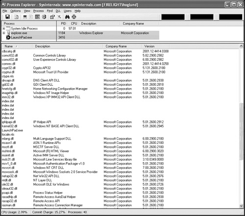</p>
<br class="calibre15"/>
<p class="docText"><a name="iddle2222" class="pcalibre calibre1"></a>Many reverse engineers find it convenient to draw diagrams of the software system. The modeling language known as UML (once short for Unified Modeling Language) is well suited to describe software systems. In UML, a software module, such as a DLL, is known as a package. We use the term <span class="docEmphasis">package</span> to refer to any arbitrary collection of things. Almost all of the packages we're interested in will be closely associated with a grouping of code and data. So, by examining the loaded DLLs as we do in <a class="pcalibre6 pcalibre5 calibre1" href="#ch08fig01">Figure 8-1</a>, we can develop a diagram of packages and determine how they interrelate. Clumping software parts into packages results in an extremely useful initial view of the software under analysis.</p>
<p class="docText">To get started grouping things into packages, begin with a list of EXEs and DLLs and assign each one a particular package. The example in <a class="pcalibre6 pcalibre5 calibre1" href="#ch08fig01">Figure 8-1</a> shows all the DLLs of an MMO called Vanguard. We can see right off the bat that <tt class="calibre38">crypt32.dll</tt> is being used. This is a library of cryptographic functions provided by Microsoft. We also see that many of the DLLs supplied with the game come as part of the operating system. In fact, only a handful of the DLLs used by the game are actually written by the game developers. Most of the code is third-party code and involves such things as rendering libraries, audio codes, and cryptographic functions. From the list of EXEs and DLLs we develop, we can choose packages of interest and start building a diagram of the software.</p>
<p class="docText"><a class="pcalibre6 pcalibre5 calibre1" href="#ch08fig02">Figure 8-2</a> shows a set of packages resulting from the first few steps of a reversing project.</p>
<p class="docText"></p><a name="ch08fig02" class="pcalibre calibre1"></a><p class="calibre28"><center class="calibre29">
<h5 class="docFigureTitle">Figure 8-2. A set of packages resulting from the start of a reversing project.</h5>
</center></p><p class="docText">
</p>
<br class="calibre15"/>
<p class="docText"><a name="iddle1394" class="pcalibre calibre1"></a><a name="iddle1531" class="pcalibre calibre1"></a><a name="iddle1959" class="pcalibre calibre1"></a><a name="iddle1966" class="pcalibre calibre1"></a>It's very likely that the game programmers assume too much about third-party packages (such as <tt class="calibre38">crypt32.dll</tt>)—they think they know how they work, what they do, what they would "never do," and so on. For example, the developers might count on the crypto library not to allow secret keys to be swapped out of memory onto disk during paging. By playing with these assumptions, we can gain great insight into the true security posture of the game.</p>
<p class="docText">The next step in reversing is to refine our picture a bit into a view of high-level objects that interact as part of the overall system. Note that the resulting interacting objects don't need to be software modules. We might count the network as one of these objects, for example. <a class="pcalibre6 pcalibre5 calibre1" href="#ch08fig03">Figure 8-3</a> shows the kind of diagram that may result.</p>
<a name="ch08fig03" class="pcalibre calibre1"></a><p class="calibre28"><center class="calibre29">
<h5 class="docFigureTitle">Figure 8-3. We break out the large-scale functions of the game into smaller groups for organizational purposes.</h5>
</center></p><p class="docText">
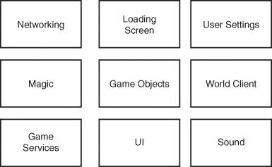</p>
<br class="calibre15"/>
<a name="ch08lev2sec2" class="pcalibre calibre1"></a>
<h4 id="title-IDAQESRF" class="docSection2Title">Function Imports and Exports</h4>
<p class="docText"><a name="iddle1412" class="pcalibre calibre1"></a><a name="iddle1422" class="pcalibre calibre1"></a><a name="iddle1961" class="pcalibre calibre1"></a><a name="iddle1968" class="pcalibre calibre1"></a>The next step in reversing is to consider each package and think about imports and exports associated with it. Obviously a DLL exists to supply functions for other parts of the program to use. That means that functions are exported from one DLL and imported into another. By using a tool such as Microsoft's Dependency Walker &lt;<a class="pcalibre6 pcalibre5 calibre1" target="_blank" href="http://www.dependencywalker.com">http://www.dependencywalker.com</a>&gt;, you make it easier to see the various dependency relations between DLLs. This tool will show not only which DLLs are used but also which functions are being used. <a class="pcalibre6 pcalibre5 calibre1" href="#ch08fig04">Figure 8-4</a> shows a screenshot of Dependency Walker.</p>
<p class="docText"></p><a name="ch08fig04" class="pcalibre calibre1"></a><p class="calibre28"><center class="calibre29">
<h5 class="docFigureTitle">Figure 8-4. Dependency Walker reveals the relationship between the DLLs used by the game Vanguard. In the figure, we can see VANGUARD.EXE uses a DLL called VERSION.DLL, and that DLL in turn uses KERNEL32.DLL, and that DLL in turn uses NTDLL.DLL. These chains layer on one another and can sometimes get very long. In other words, there is a lot of code under the hood to make stuff happen, and the game depends on that code to do the right thing.</h5>
</center></p><p class="docText"><div class="v8 pcalibre3 pcalibre2"><a target="_blank" href="fig08-04_alt.jpg" class="pcalibre calibre20">[View full size image]</a></div>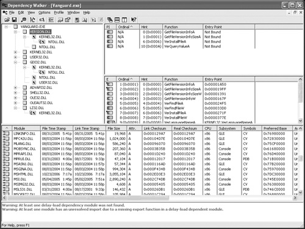</p>
<br class="calibre15"/>
<p class="docText">Dependency Walker attempts to show us which functions are used in each DLL, but it often misses some functions, and it cannot evaluate or discover code that loads dynamically as the game runs. We also can't know exactly <span class="docEmphasis">how</span> the imported functions are used (or even <span class="docEmphasis">if</span> they are used) by using this tool; nevertheless, we are quickly gaining clues about the software. The level of effort to reach this point of understanding is only about an hour of our time, so the investment is small for a pretty good return.</p>
<p class="docText">The next step in our reversing process is to push further into understanding package boundaries and start determining how the packages interact. We show you what we mean with an easy example: <a class="pcalibre6 pcalibre5 calibre1" href="#ch08fig05">Figure 8-5</a> shows a graph of the imported functions the common Windows program <tt class="calibre38">NOTEPAD.EXE</tt> uses.</p>
<a name="ch08fig05" class="pcalibre calibre1"></a><p class="calibre28"><center class="calibre29">
<h5 class="docFigureTitle">Figure 8-5. Package boundaries from the simple <tt class="calibre38">NOTEPAD.EXE</tt> program as we understand them early in a reversing analysis</h5>
</center></p><p class="docText"><div class="v8 pcalibre3 pcalibre2"><a target="_blank" href="fig08-05_alt.jpg" class="pcalibre calibre20">[View full size image]</a></div>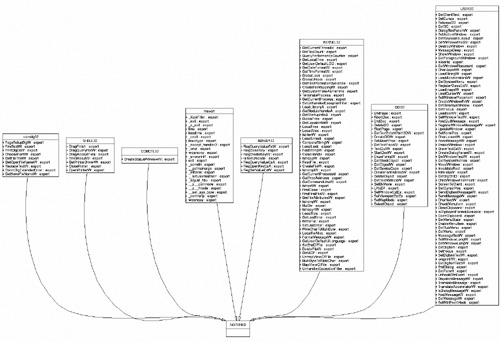</p>
<br class="calibre15"/>
<p class="docText">We generated the graph in <a class="pcalibre6 pcalibre5 calibre1" href="#ch08fig05">Figure 8-5</a> using a graphing package from AT&amp;T Research known as Graphviz &lt;<a class="pcalibre6 pcalibre5 calibre1" target="_blank" href="http://www.graphviz.org/">http://www.graphviz.org/</a>&gt; and a simple Perl script that calls the Microsoft command-line utility DUMPBIN &lt;<a class="pcalibre6 pcalibre5 calibre1" target="_blank" href="http://support.microsoft.com/kb/177429">http://support.microsoft.com/kb/177429</a>&gt;. In effect, this is pretty much the same kind of data we found by using the Dependency Walker tool. We include the script here so you can modify it to make other kinds of queries.</p>
<div class="docText1"><pre class="calibre43">open(UMLFILE, "&gt;c:\\umlfile.dot");

sub write_header
{
       $header = "digraph G {
              fontname = \"Arial\"
              fontsize = 8
              node [
                     fontname = \"Arial\"
                     fontsize = 8
                     shape = \"record\"
                     ]

              edge [
                     fontname = \"Arial\"
                     fontsize = 8
                     ]\n";

       print UMLFILE $header;
}

sub create_class
{
       my $class_name = shift();
       @function_names = @_;

       # '|' makes a horizontal bar
       # \l makes a new line

       $pkg_string = "
              $class_name [
                     label = \"{ $class_name|";

       foreach $item ( @function_names )
       {
         #print "outputting $item \n";

         $pkg_string .= "+ $item : export\\l";
       }

       $pkg_string .= "}\"";
       $pkg_string .= "]\n";
       print UMLFILE $pkg_string;
}

sub follow_imports
{
       my $filename = $_[0];
       @dll_names;
       my $dll_name_index = 0;
       my $current_dll_ptr;

       system("dumpbin /imports $filename &gt; c:\\temp.txt");
       open(STUFF, "c:\\temp.txt");
       $current_DLL = 0;

       while($record = &lt;STUFF&gt;)
       {
         print $record;
         if($current_DLL)
         {
           if($record =~ m/[ ]+[0-9A-Fa-f]+[ ]+[A-Fa-f0-9]+
([A-Za-z_0-9]+)$/)
           {
             print "pushing $1 \n";
             # get reference to the anonymous array created below
             $arrayptr = $dll_names[$current_dll_ptr + 1];
             #push import into anonymous array
             push( @$arrayptr, $1);
           }
         }
         if ($record =~ m/[ ]+([0-9A-Za-z]+\.dll)$/i )
         {
           print "got DLL: $1\n";
           $current_dll_ptr = $dll_name_index;
           $dll_names[$current_dll_ptr] = $1;      #name of DLL
           #new anonymous array
           $dll_names[$current_dll_ptr + 1] = [];
           $dll_name_index += 2;

           $current_DLL = $1;
         }
       }

       return( @dll_names );
}
sub write_tail
{
       print UMLFILE "\n}";
}

write_header();

$target_exe = "c:\\windows\\system32\\notepad.exe";
$target_exe_name = "NOTEPAD";

# create base object
print UMLFILE "$target_exe_name [ label = \"{ $target_exe_name| }\"
]\n";

# the return value is a nasty perlism, every other member of the
# array is a reference to another array containing the list of
# functions imported from the given DLL
@import_list = follow_imports($target_exe);

# parse the alien-doubled array
my $count = @import_list;
print "got $count entries\n";
$i = 0;
while($i &lt; $count)
{
       $dll_name = $import_list[$i];
       $arrayptr = $import_list[$i + 1];
       my @myarray = @$arrayptr;

       #foreach $item (@myarray)
       #{
       #  print "dll: $dll_name : got import" . $item . "\n";
       #}

       # get rid of the .dll at the end
       my $safe_name;
       if( $dll_name =~ m/(.+)\./gi )
       {
         print "fixing $1 \n";

         $safe_name = $1;
       }
       else
       {
         $safe_name = $dll_name;
       }
       # now create a class to represent the imported module
       create_class($safe_name, @myarray);

       #now create a link
       print UMLFILE "edge [ arrowhead = \"empty\" ]\n $safe_name
-&gt; $target_exe_name \n\n";

       $i += 2;
}


write_tail();

close UMLFILE;
close STUFF;

system(".\\graph_bin\\dot -T png -o .\\class.png c:\\umlfile.dot");
</pre></div><br class="calibre15"/>
<a name="ch08lev2sec3" class="pcalibre calibre1"></a>
<h4 id="title-IDAOJSRF" class="docSection2Title">Strings</h4>
<p class="docText"><a name="iddle1976" class="pcalibre calibre1"></a><a name="iddle1977" class="pcalibre calibre1"></a><a name="iddle2106" class="pcalibre calibre1"></a><a name="iddle2109" class="pcalibre calibre1"></a>Most game programs include a wealth of information in the form of ASCII strings. The program includes error messages, informative text, and sometimes even debug data such as the name of the source code file used to compile a function. This information can help you characterize which functions do what.</p>
<p class="docText"><a class="pcalibre6 pcalibre5 calibre1" href="#ch08fig06">Figure 8-6</a> shows the kinds of useful information you can discover using a simple strings function. Here we can see the names of all the source code files and the directory structure that Blizzard used to build the WoW game client. This is easily obtained by simply dumping the strings from the binary since Blizzard included these strings as part of the game software.</p>
<a name="ch08fig06" class="pcalibre calibre1"></a><p class="calibre28"><center class="calibre29">
<h5 class="docFigureTitle">Figure 8-6. When we look for strings in a game file, we may find some interesting tidbits. In this screenshot, we can see the names of all of the source code files used to build the WoW client.</h5>
</center></p><p class="docText"><div class="v8 pcalibre3 pcalibre2"><a target="_blank" href="fig08-06_alt.jpg" class="pcalibre calibre20">[View full size image]</a></div>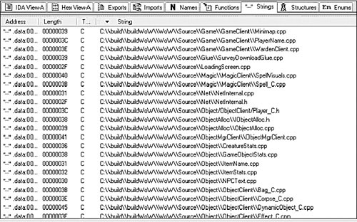</p>
<br class="calibre15"/>
<a name="ch08lev2sec4" class="pcalibre calibre1"></a>
<h4 id="title-IDAYLSRF" class="docSection2Title">Static Tracing</h4>
<p class="docText"><a name="iddle1499" class="pcalibre calibre1"></a><a name="iddle1812" class="pcalibre calibre1"></a><a name="iddle1816" class="pcalibre calibre1"></a><a name="iddle1971" class="pcalibre calibre1"></a>Now that we have some very basic idea about objects, functions, and package boundaries, we can continue with more static tracing. Static analysis is about understanding what a program will do without actually watching the program run.<sup class="docFootnote"><a class="pcalibre6 pcalibre5 calibre1" href="#ch08fn01">[1]</a></sup> Using static analysis techniques, we can build a view of our program in terms of control flow (<a class="pcalibre6 pcalibre5 calibre1" href="#ch08fig07">Figure 8-7</a>).</p><blockquote class="calibre24"><p class="docFootnote1"><sup class="calibre31"><a name="ch08fn01" class="pcalibre calibre1">[1]</a></sup> For more about static analysis and its utility in security analysis, see <a class="pcalibre6 pcalibre5 calibre1" href="ch04.html#ch04">Chapter 4</a> of McGraw's book <span class="docEmphasis">Software Security: Building Security In</span> (Addison-Wesley, 2006). Also see how attackers routinely use static analysis in our book <span class="docEmphasis">Exploiting Software</span> (Addison-Wesley, 2004).</p></blockquote>
<a name="ch08fig07" class="pcalibre calibre1"></a><p class="calibre28"><center class="calibre29">
<h5 class="docFigureTitle">Figure 8-7. A control flow graph shows which code calls which other code. The hexadecimal numbers are the memory addresses where a code block exists. This example shows all the paths that lead to a call to <tt class="calibre38">Recv</tt>, a function that reads TCP/IP packets from the Internet. You can compute this type of graph by tracing through a target program or package with a disassembler. We generated this screenshot with the reverse engineering tool from HBGary known as Inspector &lt;<a class="pcalibre6 pcalibre5 calibre1" target="_blank" href="http://www.hbgary.com/technology.shtml">http://www.hbgary.com/technology.shtml</a>&gt;.</h5>
</center></p><p class="docText"><div class="v8 pcalibre3 pcalibre2"><a target="_blank" href="fig08-07_alt.jpg" class="pcalibre calibre20">[View full size image]</a></div></p>
<br class="calibre15"/>
<p class="docText">Another useful kind of static analysis involves searching for patterns in the code. The pattern can be almost anything, including memory allocations, use of a certain pointer, or use of a certain function.</p>
<p class="docText"><a class="pcalibre6 pcalibre5 calibre1" href="#ch08fig08">Figure 8-8</a> shows the results of a pattern search around the network-related <tt class="calibre38">Recv</tt> call. The pattern we use searches for any code location that prints a message to the screen. The search criteria is for strings such as <tt class="calibre38">%s</tt> or <tt class="calibre38">%d</tt>, which are format specifiers used in string functions. In the figure, the three dark blocks are code locations that print messages to the screen. Pattern searches like these can be used to locate useful information quickly without investing a lot of time. This kind of search might help you think about which areas of a program might be vulnerable. You can then take a look at associated code locations (<a class="pcalibre6 pcalibre5 calibre1" href="#ch08fig09">Figure 8-9</a>).</p>
<a name="ch08fig08" class="pcalibre calibre1"></a><p class="calibre28"><center class="calibre29">
<h5 class="docFigureTitle">Figure 8-8. A pattern search shows where various interesting things happen near or around our call to the function <tt class="calibre38">Recv</tt>. In this case, dark blocks represent code regions that print messages to the screen. The code from one of these found locations is listed in <a class="pcalibre6 pcalibre5 calibre1" href="#ch08fig09">Figure 8-9</a>.</h5>
</center></p><p class="docText">
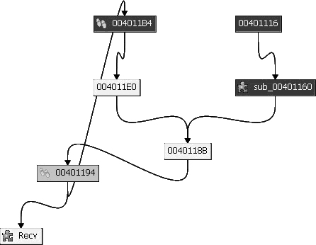</p>
<br class="calibre15"/>
<a name="ch08fig09" class="pcalibre calibre1"></a><p class="calibre28"><center class="calibre29">
<h5 class="docFigureTitle">Figure 8-9. One of the code blocks found during our pattern search around <tt class="calibre38">Recv</tt>. This code obviously prints a string of data.</h5>
</center></p><p class="docText">
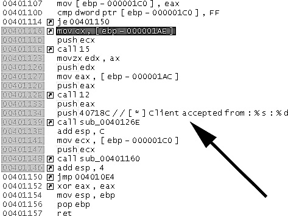</p>
<br class="calibre15"/>
<p class="docText">Searching for parsers and memory allocation procedures is also often fruitful, since parsers that deal with memory are often problematic from a security perspective.<sup class="docFootnote"><a class="pcalibre6 pcalibre5 calibre1" href="#ch08fn02">[2]</a></sup>.</p><blockquote class="calibre24"><p class="docFootnote1"><sup class="calibre31"><a name="ch08fn02" class="pcalibre calibre1">[2]</a></sup> We describe a number of classic parser-based problems in our book <span class="docEmphasis">Exploiting Software</span></p></blockquote>
<p class="docText">Another way to search through code is to examine the entire binary and disassembly for some pattern of interest. Any location, anywhere, will be <a name="iddle1094" class="pcalibre calibre1"></a><a name="iddle1309" class="pcalibre calibre1"></a><a name="iddle1955" class="pcalibre calibre1"></a>flagged if it matches the certain pattern. For example, <a class="pcalibre6 pcalibre5 calibre1" href="#ch08fig10">Figure 8-10</a> shows the results of a scan of a binary for any code that looks like it processes single-byte characters. We performed this search without regard to the proximity of the code to <tt class="calibre38">Recv</tt>. In fact, we performed the search without regard to the location of the item we happened to find.</p>
<a name="ch08fig10" class="pcalibre calibre1"></a><p class="calibre28"><center class="calibre29">
<h5 class="docFigureTitle">Figure 8-10. Results from a scan through the entire binary looking for any code location that processes single-byte characters. This is a fairly generic search, but it can yield decent results nonetheless.</h5>
</center></p><p class="docText"><div class="v8 pcalibre3 pcalibre2"><a target="_blank" href="fig08-10_alt.jpg" class="pcalibre calibre20">[View full size image]</a></div>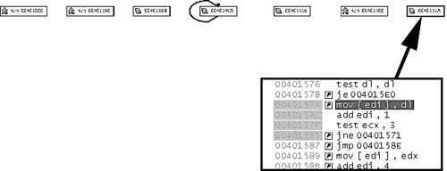</p>
<br class="calibre15"/>
<p class="docText">A search that covers the whole binary is wide as opposed to deep. The locations we come across may be valid, but whether or not they have any <a name="iddle1310" class="pcalibre calibre1"></a><a name="iddle1956" class="pcalibre calibre1"></a>meaning in the context of our work is an entirely different problem. To extend our example, suppose we want to find any code that parses chat messages for embedded color codes. The generic search illustrated in <a class="pcalibre6 pcalibre5 calibre1" href="#ch08fig10">Figure 8-10</a> is going to find many more locations in the code than just the color code parser. In fact, such scans can produce hundreds of locations, leaving us to sift through them looking for a needle in a haystack. Granted, the haystack is a lot smaller than it was before we performed our search, but it can still be daunting.</p>
<p class="docText">Given a control flow graph (<a class="pcalibre6 pcalibre5 calibre1" href="#ch08fig07">Figure 8-7</a>) and the results of a wide pattern scan (<a class="pcalibre6 pcalibre5 calibre1" href="#ch08fig08">Figure 8-8</a>), we can combine the views to determine which areas we might be able to reach. That is, we trace the regions around our hits to find intersections with areas of code we know we can reach. If we're lucky, we can then connect the dots between known areas and the new location. In the end, we end up with some hypotheses about "how to get to code location 4." <a class="pcalibre6 pcalibre5 calibre1" href="#ch08fig11">Figure 8-11</a> shows a combined view.</p>
<a name="ch08fig11" class="pcalibre calibre1"></a><p class="calibre28"><center class="calibre29">
<h5 class="docFigureTitle">Figure 8-11. A combined view of control flow analysis and pattern scanning results that yields hypotheses about where to focus attention. In this figure, the topmost heavy arrow points to a code location that is reached during normal program operation. A clear path exists between this known location and the suspect location we found with our pattern search. In theory, we should be able to read the code on the path between to determine how to reach the new location.</h5>
</center></p><p class="docText"><div class="v8 pcalibre3 pcalibre2"><a target="_blank" href="fig08-11_alt.jpg" class="pcalibre calibre20">[View full size image]</a></div>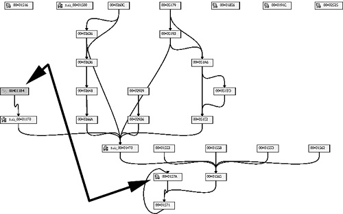</p>
<br class="calibre15"/>
<p class="docText"><a name="iddle1430" class="pcalibre calibre1"></a><a name="iddle1900" class="pcalibre calibre1"></a><a name="iddle1962" class="pcalibre calibre1"></a>In our reverse engineering process, we have now reached a point that differentiates formal security analysis from hacking. A security analyst needs to focus attention on the entire program and all of its intricacies; a hacker can go for high-value targets and ignore the rest. Software security is completely lopsided and unfair in this respect, but that's just how things are. As you can see, any game developer is on the losing end of this equation. A game hacker needs to uncover only one way to exploit the game, but the developer must focus on the entire game, identify every conceivable attack, and then remediate them all.</p>
<a name="ch08lev2sec5" class="pcalibre calibre1"></a>
<h4 id="title-IDA1WSRF" class="docSection2Title">Dynamic Tracing</h4>
<p class="docText">A large part of our work up to this point involves static analysis—that is, analysis without running the program. The next step is to fire up the program and do some dynamic tracing, making use of static knowledge. The good news is that we can automatically collect dynamic information as a program runs using coverage analysis (see <a class="pcalibre6 pcalibre5 calibre1" href="ch06.html#ch06">Chapter 6</a>). We can review coverage data and determine whether any interesting spots have been executed in various situations.</p>
<p class="docText">Most games are built as a series of interconnected loops. By and large, these loops are event loops, which have other event loops nested inside them. Because of this design, what you see when you look at a dynamic trace is a series of loops within loops that periodically repeat. Using dynamic analysis, you can build a graph of all the code locations visited when you perform certain tests. You can use this graph as a starting point to drill down into other regions of code you have already identified statically. <a class="pcalibre6 pcalibre5 calibre1" href="#ch08fig12">Figure 8-12</a> hints at the kind of map you can build.</p>
<a name="ch08fig12" class="pcalibre calibre1"></a><p class="calibre28"><center class="calibre29">
<h5 class="docFigureTitle">Figure 8-12. A dynamic analysis shows code visited during the game's normal execution—the beginnings of a map of where in the code we have been (i.e., which code has been executed). This information gives us a starting point for drilling deeper into regions we might not have visited.</h5>
</center></p><p class="docText"><div class="v8 pcalibre3 pcalibre2"><a target="_blank" href="fig08-12_alt.jpg" class="pcalibre calibre20">[View full size image]</a></div>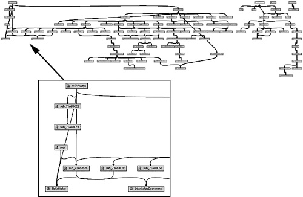</p>
<br class="calibre15"/>
<p class="docText">Because software programs are so large (especially games), you would be completely lost without a map to guide you through the process. Instead of looking at the entire software program as a big blob of code, we show you how to target regions of code and work your way around from there.</p>
<p class="docText">We can combine static control flow diagrams with dynamic pictures of control flow to yield interesting effects. The result is a hybrid picture (<a class="pcalibre6 pcalibre5 calibre1" href="#ch08fig13">Figure 8-13</a>). We call the resulting view of the program a map—essentially a control flow diagram with coverage information attached to it. In our example, we see a set of subroutines that have not been called during program operation. We might be able to get these locations to execute, but we must reverse engineer the code in order to learn how.</p>
<a name="ch08fig13" class="pcalibre calibre1"></a><p class="calibre28"><center class="calibre29">
<h5 class="docFigureTitle">Figure 8-13. A hybrid view combining statically computed control flow information and dynamically computed data about a particular set of runs. We call this view a map.</h5>
</center></p><p class="docText"><div class="v8 pcalibre3 pcalibre2"><a target="_blank" href="fig08-13_alt.jpg" class="pcalibre calibre20">[View full size image]</a></div>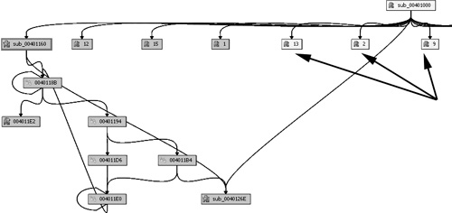</p>
<br class="calibre15"/>
<p class="docText">Now that we have developed a map, we can think of the code as a giant city that corresponds to the map. Before you go wandering off into this city, <a name="iddle1083" class="pcalibre calibre1"></a><a name="iddle1095" class="pcalibre calibre1"></a><a name="iddle1102" class="pcalibre calibre1"></a><a name="iddle1103" class="pcalibre calibre1"></a><a name="iddle1438" class="pcalibre calibre1"></a><a name="iddle1594" class="pcalibre calibre1"></a><a name="iddle1632" class="pcalibre calibre1"></a><a name="iddle1899" class="pcalibre calibre1"></a><a name="iddle1914" class="pcalibre calibre1"></a><a name="iddle1989" class="pcalibre calibre1"></a><a name="iddle2027" class="pcalibre calibre1"></a>you can put thumbtacks on the map to indicate all the streets and intersections of interest. That gives your wandering more purpose. This is precisely what we are doing with our reverse engineering process. We build a list of target areas and explore the regions around these locations. We can connect the dots between areas of code and come up with a rough idea of why we should look at a particular region of code.</p>
<p class="docText">Unfortunately, though, our reversing work has just begun. The hard part is yet to come—how do you read the code areas once you find them?</p>
<a href="10061538.html" class="pcalibre calibre1"></a><ul class="calibre18"></ul></td></tr></table><table width="100%" border="0" cellspacing="0" cellpadding="2" class="calibre4"><tr class="calibre2"><td valign="middle" class="v1 pcalibre1" height="5"></td></tr><tr class="calibre2"><td valign="middle" class="v1 pcalibre1"><table cellpadding="0" cellspacing="0" border="0" width="100%" class="calibre4"><tr class="calibre2"><td class="calibre6"><span class="calibre7"> </span>
                   
                  <span class="calibre7">   </span>
             <span class="calibre7"> </span></td></tr></table></td><td class="calibre8"/><td valign="middle" class="v2 pcalibre1"> 
           
          <span class="calibre7"><a target="_self" href="ch08.html" title="Previous section" class="pcalibre calibre1"></a></span>
				
				 
				
				<span class="calibre7"><a target="_self" href="ch08lev1sec2.html" title="Next section" class="pcalibre calibre1"></a></span></td></tr></table><table width="100%" border="0" cellspacing="0" cellpadding="2" class="calibre4"><tr class="calibre2"><td valign="top" class="calibre14"><span class="calibre7"></span></td></tr></table></div><!--IP User 2--></td></tr></table></td><td class="calibre3">
                         
                      </td></tr><tr class="calibre2"><td colspan="3" valign="bottom" class="calibre3"><br class="calibre15"/><p class="v5 pcalibre1"></p><br class="calibre15"/></td></tr></table></div>

{% endraw %}

